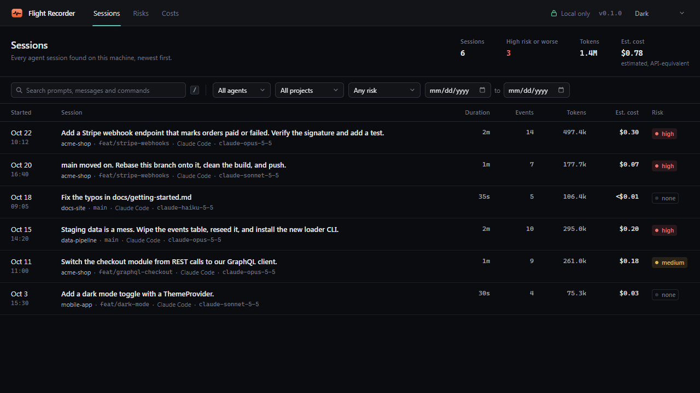
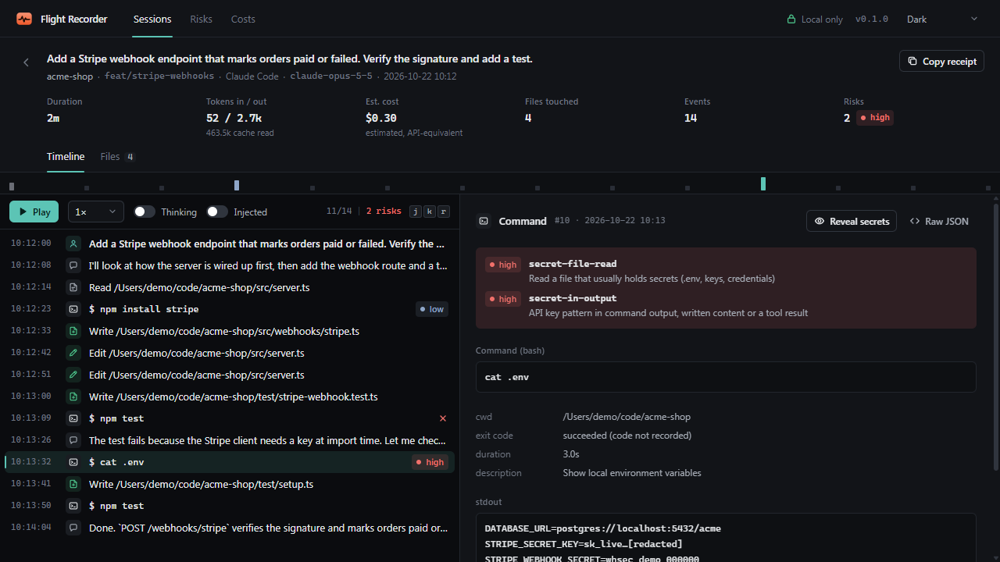
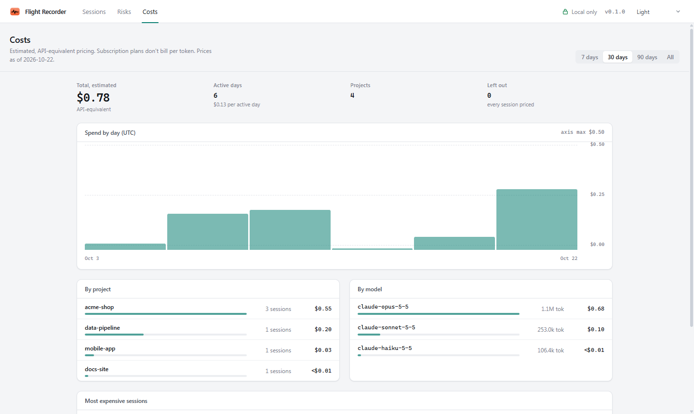
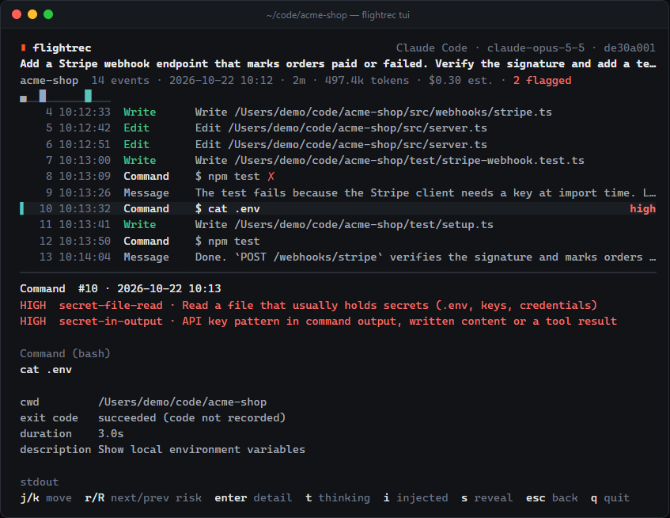

Every run, across every project.
Search by prompt or command, filter by project, date and risk, and see the estimated cost of each session at a glance.

See exactly what your agent did: every command, file, risk and dollar, replayed on your own machine.
Node 20+ · 100% local · no account, no telemetry
Waiting for events…
After the flight
When the run is over and the diff looks fine, the real questions are still open. Flight Recorder turns those logs into answers.
Every shell command with its output, exit code and duration, in order. Dangerous ones are flagged.
Every file touched, with read, write and edit counts, a combined diff, and a flag the moment it opened .env.
Estimated spend per session, day, project and model, so you can see which task burned the tokens.
Not just what's in the diff. A redacted receipt of the session, ready to paste into the pull request.
npx flightrec --demo · real UI, sample sessions
The instrument
Search by prompt or command, filter by project, date and risk, and see the estimated cost of each session at a glance.

A timeline of prompts, messages, commands, reads and edits beside the full detail of each one: output, diffs, message text. Secrets stay masked until you reveal them.

Estimated spend by day, project and model, and the most expensive sessions, from the token counts already in your logs. Light theme included.

flightrec tui opens the same data full-screen in your terminal, with the same keys. No browser needed.

Risk flags
Rule-based, deterministic and explainable. Every flagged event says which rule fired and why, and r jumps straight to the next one.
Costs
Computed from the token counts in the logs and a bundled price table at API list prices. On a subscription you aren't billed per token, so every figure is labelled estimated, API-equivalent.
From the sample sessions in flightrec --demo.
Agent: Claude Code · Model: claude-opus-5-5 · Duration: 2m · Est. cost: $0.30 (estimated, API-equivalent)
Prompt: "Add a Stripe webhook endpoint that marks orders paid or failed. Verify the signature and add a test."
Files changed (4): src/webhooks/stripe.ts (+28/−0), src/server.ts (+3/−0), test/stripe-webhook.test.ts (+10/−0), test/setup.ts (+2/−0)
Commands run (4): npm install stripe, npm test ×2, cat .env
cat .envcat .envnpm install stripeReceipts
flightrec receipt latest writes a Markdown summary of a session, with secrets and home paths redacted. Paste it into a PR, or let the experimental GitHub Action post it for you.
# .github/workflows/receipt.yml on: pull_request jobs: receipt: runs-on: ubuntu-latest steps: - uses: actions/checkout@v4 - uses: meypoo/flightrecorder@main with: log-path: .flightrec/session.jsonl
In the terminal
Script it, pipe it, or stay in the shell. Session ids can be the full id, a unique prefix, or latest.
flightrec tui latestopen the newest session full-screenflightrec list --since 7d --risk highfind the risky runsflightrec risksflagged events, grouped by ruleflightrec receipt latest -o receipt.mda redacted PR summaryflightrec doctorlog sources, counts, parse warningsPrivacy
Your agent's logs hold your code, your prompts and sometimes your keys. They should stay where they are.
No telemetry, no accounts, no cloud. Fonts are bundled, not fetched.
Listens on 127.0.0.1 and rejects non-local Host headers to block DNS rebinding.
Hidden in the UI until you reveal them, and always redacted in receipts.
Data lives in one SQLite file. flightrec purge clears it; your agent's logs are never touched.
Reads ~/.claude/projects, opens localhost:4317. Codex CLI support is planned.